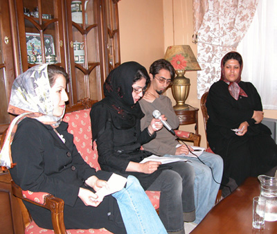
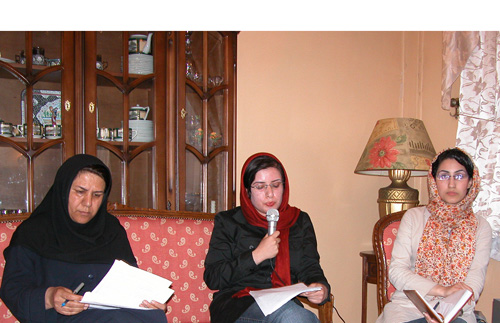

پذيرش > تریبون > گزارش كمپين > سومین نشست عمومی کمپین یک میلیون امضا:"رابطه کمپین با احزاب و جنبش های (...)


 سومین نشست عمومی کمپین یک میلیون امضا:"رابطه کمپین با احزاب و جنبش های دیگر" سومین نشست عمومی کمپین یک میلیون امضا:"رابطه کمپین با احزاب و جنبش های دیگر"
8 اردیبهشت 1386 - فرناز سیفی / عکس : الناز ناطقی - نسخه قابل چاپ
تغییر برای برابری : سومین نشست عمومی اعضای کمپین " یک میلیون امضا برای تغییر قوانین تبعیض آمیز" با موضوع " رابطه کمپین با احزاب و جنبش های دیگر" روز پنج شنبه شش اردیبهشت 1386 در منزل مسکونی یکی از اعضای کمپین برگزار شد.
رابطه کمپین با احزاب سیاسی

موضوع پانل اول این نشست "رابطه کمپین با احزاب سیاسی" و سخنرانان این پانل بهاره هدایت، زهره اسدپور و کاوه مظفری بودند. بهاره هدایت، عضو شورای مرکزی دفتر تحکیم وحدت، مسئول کمیسیون زنان این تشکل و از اعضای کمپین یک میلیون امضا سخنان خود را با شرح تئوری مرتضی مردیها در این باره که به نظر در روند زندگی انسان ها، واقعیت های اجتماعی نسبت به سازه های ذهنی نقشی مهم تر داشته اند آغاز کرد. هدایت در توضیح روند نه ماه کمپین یک میلیون امضا گفت:« اعضای کمپین در ساخت سازه های ذهنی جامعه موفق بوده اند و اگر سنگ اندازی های غیر قانونی نبود رشد آماری تعداد امضاها نیز بیشتر بود. جمع آوری یک میلیون امضا تغییر واقعیت اجتماعی نیست، بلکه تلاش در تغییر سازه های فکری اجتماع است.»
اوی سخنان خود را با ذکر این نکته که گفتمان مشترک برابری طلبی میان کمپین و مردان سیاست به وجود نیامده است ادامه داد و متذکر شد که دغدغه اهداف کمپین میان سیاسیون و احزاب جدی است و ارتباط گیری، منافاتی با این موضوع که کمپین گفتمان و بستری اجتماعی دارد و همه پشتوانه خود را از مردم می گیرد ندارد. این عضو کمپین یک میلیون امضا در ادامه گفت:« باید جبهه گسترده ای از شمالی ترین راس هرم اجتماع تا کف آن را تشکیل دهیم. مطالبات، مواضع و پیشنهادات ما اینک در دست ماست و کمپین موظف شده است پیام مطالبات ما به همه حتی احزاب و سیاسیون برساند. در شرایط متعادل تر و مطلوب تر سیاسی و اقتصادی که ایجاد آن نه برعهده کمپین و نه هدف آن است، می توان از چنین رابطه ای برای قانونی کردن مطالبات خود بهره ببریم.»

سخنران دوم این پانل زهره اسدپور، از اعضای کمپین یک میلیون امضا در شهر رشت و عنوان سخنرانی وی "احزاب و استقلال کمپین" بود. اسدپور سخنان خود را با ذکر این سوال کلیدی که هدف کمپین چیست آغاز کرد و خود اینگونه به این سوال پاسخ داد که هدف کمپین را تنها تغییر قوانین نمی داند و این هزینه های هر روزه ای که اعضای کمپین متحمل می شوند برای لابی های سیاسی نیست؛ او هدف کمپین را تجمیع خواست عمومی تغییر قوانین دانست و تاکید کرد که تغییر قوانین به دنبال تجمیع خواست عمومی تغییر است که پیش می رود.
زهره اسدپور درباره رابطه با احزاب سیاسی گفت:« در این فضای ناسالم که جامعه مدنی تقویت و حمایت نمی شود، احزاب برآمده و از میان مردم نیستند و نگاهی ابزاری به حرکت ها و گروه های مستقل دارند. احزاب ما را تبدیل به زائده خود می کنند و حتا فکر می کنم چندان نباید به دنبال امضا جمع کردن از مردان سیاسی رفت. آنها با این دید ابزاری حرکت های ما را مصادره می کنند و بعد چگونه و با چه ابزاری در این فضای بی رسانه می خواهیم نشان داده و ثابت کنیم که سهم ما چه بوده است؟» وی با تاکید بر این موضوع که کمپین موظف است به جنبش زنان کمک کرده و به روندی که جمع های کوچک و پراکنده زنان را دور هم جمع کرده است ادامه دهد، مهم ترین تهدید برای کمپین را مخدوش شدن استقلال آن از راه نزدیکی با احزاب دانست و نتیجه گرفت که به نظر وی ارزش ندارد که جنبش زنان را با نزدیکی به احزاب دچار خدشه کرد.

آخرین سخنران پانل " رابطه کمپین با احزاب سیاسی" کاوه مظفری از فعالان دانشجویی و اعضای کمپین یک میلیون امضا و عنوان سخنرانی وی "نسبت کمپین با احزاب سیاسی" بود. مظفری صحبت خود را با تاکید بر این موضوع که کمپین حرکتی است متکثر و اعضای آن افرادی با دیدگاه های بسیار متفاوت که تفسیرهای گوناگون و متفاوتی از کمپین دارند آغاز کرد. وی سپس گفت که قصد دارد از موضعی سوسیال فمینیستی حداقل های کمپین را که اگر آنها را کنار بگذاریم، کمپین دیگر کمپین نیست را تفسیر کند.
مظفری با ذکر این نکته که میان واقعیت سیاسی و اجتماعی تفکیک کلامی قائل است، متذکر شد که به دنبال این هستیم که بگوییم این دو موضوع یکی نیستند. او گفت: « حکومت می گوید کار ما سیاسی است.بنا به آن ساختار دیرینه استبدادی که همیشه در کشور وجود دارد، هرکس غیر خودش را مخالف سیاسی خود می بیند تا بتواند او را سرکوب کند. آن فرد داخل حزب سیاسی هم چون هدفش گرفتن قدرت است، نگاهی سیاسی دارد و جنبش های اجتماعی را چشم اندازی برای رسیدن به قدرت سیاسی می بیند. اما این دغدغه هایی که از داخل خانه های مردم بیرون آمده و موضوع کمپین است لزوما به سیاسیت و مذهب برنمی گردد. کمپین لااقل در فاز اول خود کاری با سیاست ندارد. درون جامعه است، با مردم گفتگو می کند و قانون را با صحبت با مردم تکوین می کند. قانون در سطح جامعه مدنی از طریق کمپین دارد ساخته می شود و این امر کنشی سیاسی نیست.سیاست مداران می گویند قوانین لزوما سیاسی هستند! من قبول ندارم. این تصوری ایرانیزه است که فکر کنیم لزوما هر قانونی بحثی سیاسی است.»

وی سخنان خود را اینگونه ادامه داد که کمپین را حرکتی اجتماعی و در گامی جلوتر، یک جنبش اجتماعی می بیند؛ جنبشی در دورن جنبش زنان که مولفه های جنبشی را هم دارد. وی سپس به توضیح تفاوت های کمپین با احزاب و گروه های سیاسی پرداخت و این تفاوت ها را اینگونه دانست:
 ساختار کمپین شبکه ای و بی راس است، اما احزاب سیاسی همه ساختاری سلسله مراتبی دارند.و اولین مشکل هنگام گفتگو درباره کمپین با احزاب همین سوال است که رئیس شما چه کسی است؟ ساختار کمپین شبکه ای و بی راس است، اما احزاب سیاسی همه ساختاری سلسله مراتبی دارند.و اولین مشکل هنگام گفتگو درباره کمپین با احزاب همین سوال است که رئیس شما چه کسی است؟
هویت ذهنی ما از فمینیسم بسیار سیال است، اما هویت ذهنی در احزاب بسیار سفت و سخت و ایدولوژیک است. هنگام صحبت آنها از ایدئولوژی کمپین خواهند پرسید و ما پاسخی نداریم.
ابزار کمپین رسمی نیست و هیچ حزبی از ابزاری مشابه چون گفتگوی چهره به چهره استفاده نمی کند و این هم مشکل دیگری است که وقت گفتگو پیش خواهد آمد.
مظفری سخنان خود را با ذکر این موضوع که معتقد است کمپین در ائتلاف های خود (اگر روزی بخواهد ائتلافی انجام دهد) باید سه موضوع را رعایت کند خاتمه داد. مظفری این سه موضوع را پایبند بودن به تفکر خود، عدم استفاده از منابعی که کمپین را زیر سوال برد و اتخاذ تصمیم نهایی از سوی خود کمپین دانست.
رابطه کمپین با دیگر جنبش های اجتماعی

عنوان پانل دوم این نشست "رابطه کمپین با دیگر جنبش های اجتماعی" و سخنرانان سمیه رشیدی و شهلا انتصاری بودند. عنوان سخنرانی سمیه رشیدی " ارتباط کمپین و چنبش های دانشجویی" بود. رشیدی ساخت جنبش دانشجویی تا این اواخر را، ساختی مردانه می بیند که به دلیل همین ساختار زنان اندکی نیز وارد تشکل های سیاسی می شدند. او دستاوردهای ورود شصت و سه درصدی زنان به دانشگاه ها، تاثیر حضور زنان فعال جنبش زنان در فضای اکادمیک، ورود رشته مطالعات زنان، نشریات دانشجویی تخصصی حوزه زنان و مواردی از این دست را عوامل تغییر این ساختار مردانه در چند سال اخیر می داند.

رشیدی با توجه به حضور و حمایت جنبش زنان در فاجعه هجده تیر هفتاد و هشت و حضور گسترده دانشجویان در تجمع بیست و دو خرداد هشتاد و چهار و هشتاد و پنج را نشانه ای از اتحاد و کمک های متقابل این دو جنبش دانست و موضع طیف های مختلف دانشجویان نسبت به کمپین را اینگونه تبیین کرد:« بسیاری از فعالان کمپین دانشجویان هستند. از سویی چپ هایی را داریم که خود را رادیکال می دانند و عمدتا دانشجویان دانشگاه تهران هستند و معتقدند کمپین حرکتی لیبرالی است که به دنبال تغییر بنیانی خواسته ها نیست و نگاهی لائیک نیز ندارد. آنها از شیوه های مختلفی علیه کمپین استفاده می کنند؛ از جمله قصد داشتند "کمپین ضد کمپین" به راه اندازند.
طبف دیگری از چپ ها که عمدتا دانشجویان دانشگاه علامه هستند، خود فعال در این کمپین هستند و بسیاری از انتقادات چپ های رادیکال را نیز پاسخ دادند. از جمله اینکه هر حرکت لیبرالی صرفا روبنایی نیست. طیف دیگری از دانشجویان، افراد لیبرالی که عمدتا اعضای دفتر تحکیم وحدت هستند، بعد از آغاز به کار کمیسیون زنان این تشکل و دستگیری مهندس موسوی خوئینی در تجمع میدان هفت تیر حضور گسترده ای در حرکت های زنان و کمپین یک میلیون امضا دارند.»
رشیدی تصریح کرد که بحث شبکه، بحثی مهم در جنبش دانشجویی است و به یمن این شبکه های قوی دانشجویی، کمپین توسط دانشجویان به بسیاری از شهرهای ایران برده شده است و این جنبش می تواند با حساس کردن اذهان دانشجویان نسبت به آنچه در جامعه مدنی مطرح است، گامی مهم در بسط کمپین یک میلیون امضا را بردارد.

آخرین سخنران این مراسم نیز شهلا انتصاری و عنوان سخنرانی وی "ارتباط کمپین با جنبش های اجتماعی با تاکید بر جنبش کارگری ایران" بود. انتصاری کمپین را یکی از نشانه های رشد یافتگی جنبش های اجتماعی در ایران دانسته و نشانه های این رشد یافتگی را حرکت وحدت طلبانه، استفاده مدرن از ابزار ارتباطی، استفاده از اشکال نوین و خلاق ساماندهی در کمپین و مواردی از این دست دانست.
وی با توضیح حرکت و ابزارهای کارگران سندیکای شرکت واحد در حریان مبارزات خود برای تاسیس سندیکا گفت: « کارگران نیز برای تشکیل سندیکا ساعت ها صحبت کرده و امضا جمع می کردند.آنها در مسیر حرکت خود توانستند در بیست منطقه شرکت واحد در تهران از طریق همین صحبت چهره به چهره امضا جمع آوری کرده و انتخابات مجمع عمومی سندیکا را برگزار کنند. پس می بینیم که حرکت کارگران و زنان به شکل دیالکتیکی به هم ربط دارد.»
وی با اشاره به سهم خواهی و عدالتی که زنان همواره در تمام جنبش های صد ساله اخیر ایران به دنبال ان بوده اند گفت: « کجای جهان، کدام قوم، کدام طبقه و جنبش را سراغ دارید که زنان بخشی از آن نباشند؟در همان حرکت کارگران شرکت واحد می بینیم که زنان آنها تا چه اندازه در شکل گیری، تداوم و تثبیت حرکت کارگران نقش و تاثیر داشته اند. در این تاریخ شفاهی ما اما نقش این زنان پشت پرده مانده و به چشم نمی آید.»
انتصاری با تاکید بر لزوم ارتباط تنگاتنگ کمپین یک میلیون امضا با سایر جنبش های اجتماعی، تاکید کرد که بخشی از کار کمپین تلاش برای احقاق حقوق قانونی است که از ما زنان سلب شده است و بخش دیگری به سایر مطالبات ما از جمله مطالبات اقتصادی نیز باید توجه داشته باشد.
این نشست، زودتر از زمان پیش بینی شده به پایان رسید.
ارسال به
بالاترین
،
توییتر
،
فریندفید
،
فیسبوک
در همين بخش :
 دهمین دورۀ مراسم تندیس صدیقه دولت آبادی ۱۳۹۲ دهمین دورۀ مراسم تندیس صدیقه دولت آبادی ۱۳۹۲
کارت پستالهایی به بهانهی هشت مارس و به یاد همهی مبارزین راه برابری
بیانیه بیش از 350 تن از مدافعان حقوق زنان به مناسبت روز جهانی زن؛ زنان هر روز فرودستتر میشوند
لباسی که برای تن ما دوخته اند! /اعظم بهرامی
چالشها و چشمانداز فعالیت مدنی زنان
ديگر بخش ها :
طرح یک میلیون امضا
|
مقالات
|
سایت نوشته ها
|
اخبار
|
گزارش كمپين
|
گفت و گو
|
علیه سکوت
|
كوچه به كوچه
|
نامه های شما
|
گزارش ویژه
|
گفتگو با اعضا
|
ویژه سالگرد کمپین
|
تصویر برابری
|
دل آرام علی
|
تریبون
|
مقالات
|
تاریخ شفاهی
|
خارج از چارچوب
|
کتابخانه
|
درباره کمپین
|
کمپین در شهرها
|
کمپین در بند
|
صدای تغییر
|
ویژه 22 خرداد
|
لایحه حمایت از خانواده
|
گالری
|
عشا مومنی
|
امیر یعقوبعلی
|
خدیجه مقدم
|
راحله عسگری زاده و نسیم خسروی
|
پروین اردلان،جلوه جواهری، مریم حسین خواه، ناهید کشاورز
|
زینب پیغمبرزاده
|
سعیده امین، سارا ایمانیان، محبوبه حسین زاده، ناهید کشاورز و همایون نامی
|
احترام شادفر
|
نسیم سرابندی زاده،فاطمه دهدشتی
|
وبلاگ مهمان
|
پرونده خرم آباد
|
دستگیری ها
|
مریم مالک
|
پرستو اللهیاری
|
مهرنوش اعتمادی
|
سمیه رشیدی
|
Other Languages
|
همراهان
|
«فراخوان کمپین ده روز با بهاره هدایت»
| English
|